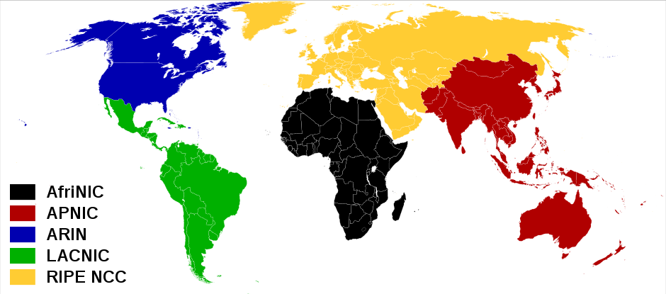

{kind=link}
{kind=link}

The amount of IPv4 space is just about used up. That means IPv4 addresses are scarce resources. Scarcity can limit future expansion of the Internet. Those who wish to connect to the world, but do not have a global IP address, cannot do so. This is especially true in the developing world, which has less IPv4 space allocated to it. A transition to IPv6 removes this scarcity and balances the IP addresses allocated to each continent.
Countries and continents which have not had large access to Internet infrastructure have received less IPv4 addresses than countries where the global Internet was rapidly adopted. IPv4 addresses have been allocated based on how many IPs were used up in each region. If a continent was using most of its IP addresses, then it was likely to get a new block. What this means is that developed countries, which connected to the Internet early and in larger numbers have more IPv4 addresses to use, reuse and reallocate. If the world were to stay with IPv4, the lack of IP addresses allocated to the developing world would create a bottleneck and barrier to the development of Internet technologies in those countries.
IP address space is distributed by the Internet Assigned Numbers Authority (IANA). The IANA distributed blocks of IPs (usually a /8) to a Regional Internet Registry (RIR) who then distributes it out to Internet Service Providers and others. RIRs are:

As you can see the USA and Canada alone take up almost half the IPv4 allocation of the whole world, while Africa and Latin America have small slivers of IP space. IPv6 is a whole new ball game. First off, the sheer size of IPv6 address space is so gigantic that most of it has not been allocated at all and is reserved.
The small slices are all the world's IPv6 allocation so far.
Each RIR has been assigned a /12 along with a few /23s and other blocks. There has been little need to request more space than these /12s, and because of this, IPv6 RIR allocation is fairly evenly distributed at the moment. As IPv6 usage grows this may slowly change, but because IPv6 addresses will not become scarce resources, developing countries do not have to worry about not being able to receive the IP addresses they desire as their demand grows. The adoption of IPv6 ensures more equal opportunities to develop the Internet. Current IPv6 allocation, excluding reserved address space looks like this:

Finally, just to put things into size perspectives, all the IPv4 address space is 2^32=4,294,967,296 IP addresses. Every IPv6 RIR has been assigned more than a /12. A single /12 has 2^52=4,503,599,627,370,496 /64s! Each /64 contains 2^64 IP addresses. Comparing 2^32 and 2^52 visual is meaningless, the IPv4 number doesn't even render:
Source: IPv6 Global Unicast Address Assignments and IANA IPv4 Address Space Registry


{kind=link}